LPC810
開發板
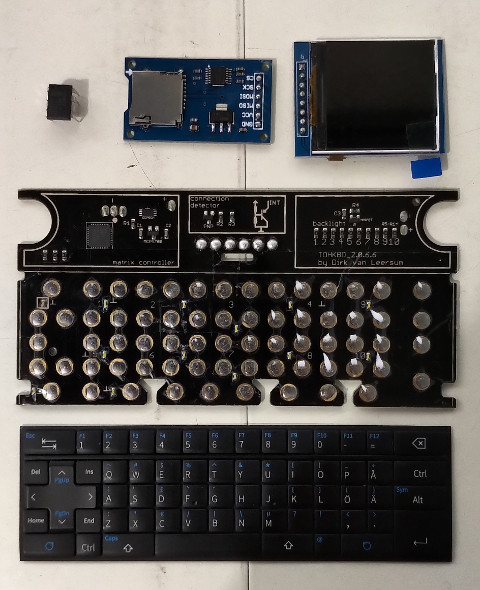
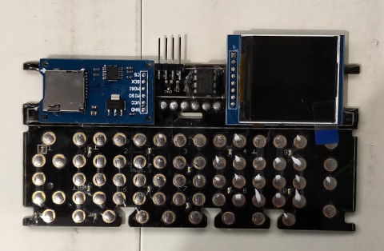
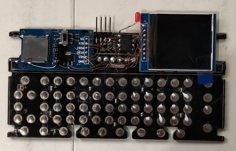
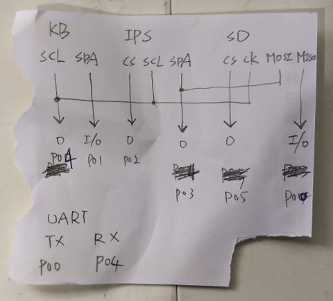
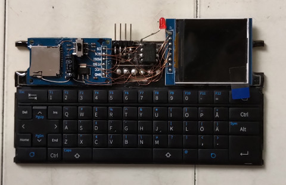
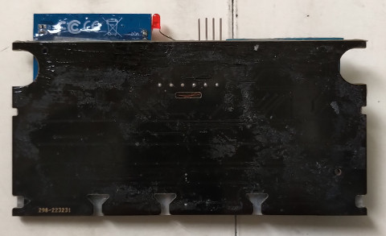
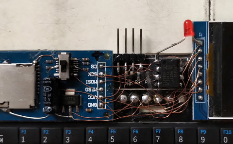
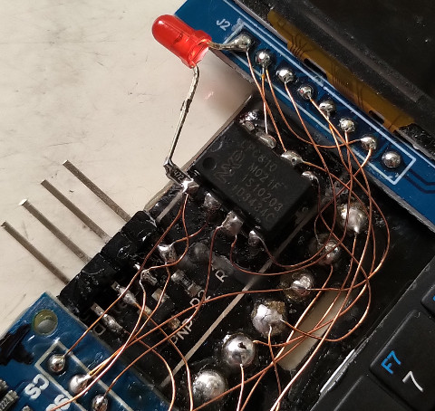
OpenSCAD
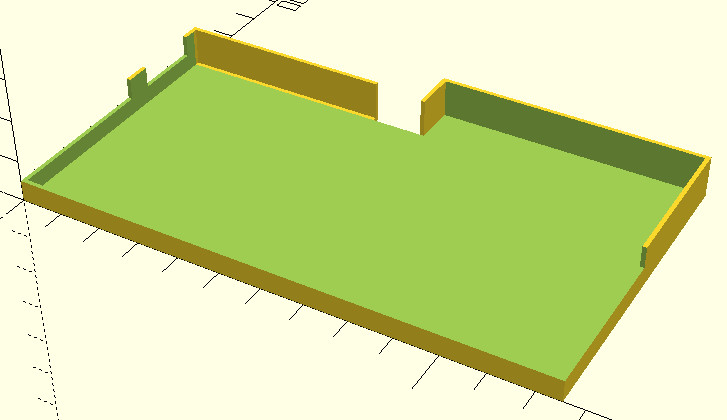
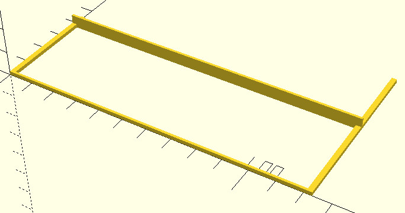
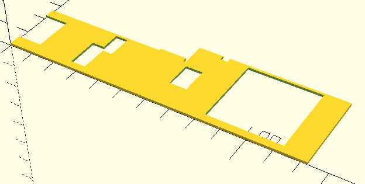
程式碼：
module c_side(){
difference(){
union(){
difference(){
cube([126, 74, 10]);
translate([1, 1, 1]){
cube([124, 72, 10]);
}
translate([0, 0, 5]){
cube([150, 38, 10]);
}
translate([0, 63, 0]){
cube([62, 50, 10]);
}
}
translate([0, 64, 0]){
cube([50, 1, 10]);
}
translate([0, 63, 0]){
cube([50, 1, 1]);
}
translate([0, 63, 0]){
cube([1, 1, 10]);
}
translate([62, 63, 0]){
cube([1, 10, 10]);
}
}
translate([0, 44, 5]){
cube([15, 16, 10]);
}
}
}
module b_side(){
difference(){
translate([0, 0, 0]){
cube([123, 38.5, 1.5]);
}
translate([(123-119)/2, 1, 0]){
cube([119, 36.5, 1.5]);
}
}
cube([2, 43, 1.5]);
translate([121, 0, 0]){
cube([2, 69, 1.5]);
}
translate([0, 37.5, 0]){
cube([123, 1, 5]);
}
}
module a_side(){
difference(){
cube([60.5, 25, 1]);
translate([0, 5, 0]){
cube([10, 16, 10]);
}
translate([26, 3, 0]){
cube([6, 13, 10]);
}
translate([31, 14, 0]){
cube([5, 10, 10]);
}
}
translate([49.5, 25, 0]){
cube([11, 1, 1]);
}
translate([60.5, 0, 0]){
cube([1, 24, 1]);
}
translate([61.5, 0, 0]){
difference(){
translate([0, 0, 0]){
cube([61, 34, 1]);
}
translate([1.5, 11, 0]){
cube([7, 11, 10]);
}
translate([10, 32, 0]){
cube([3, 5, 10]);
}
translate([21, 3, 0]){
cube([30, 30, 10]);
}
}
}
}
a_side();
b_side();
c_side();